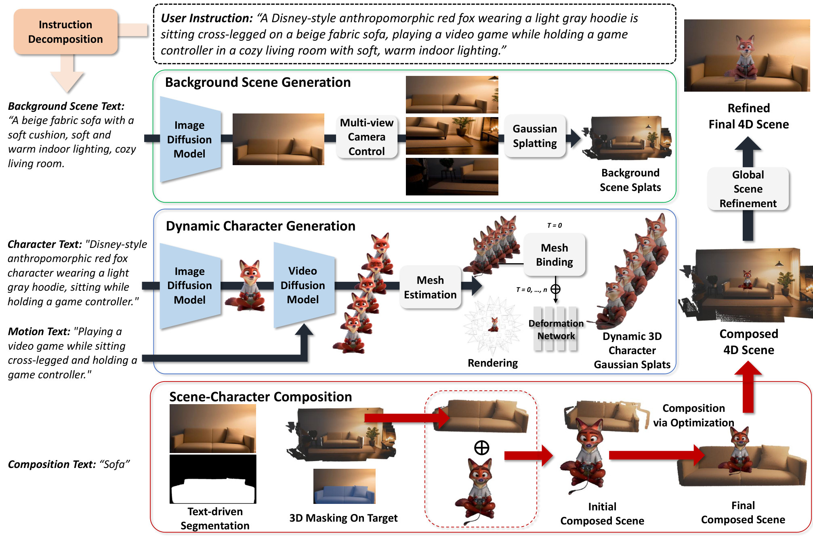
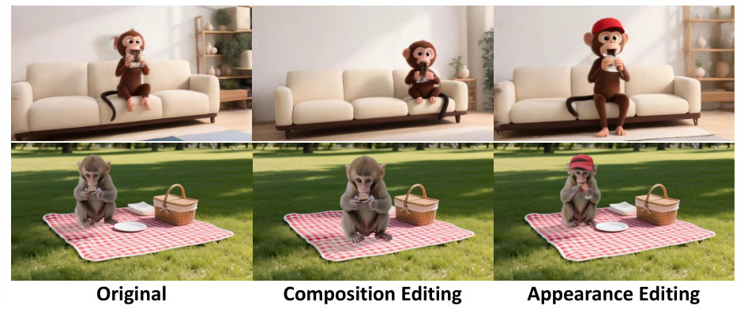
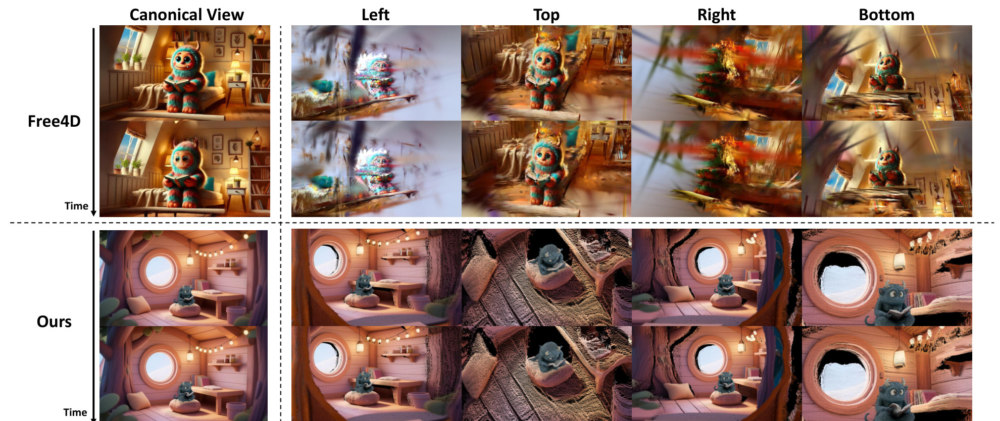
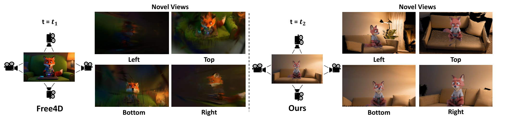
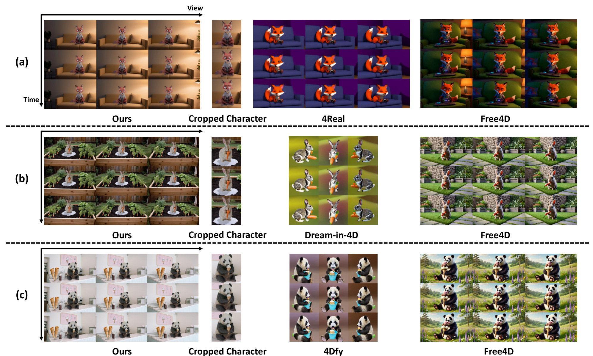
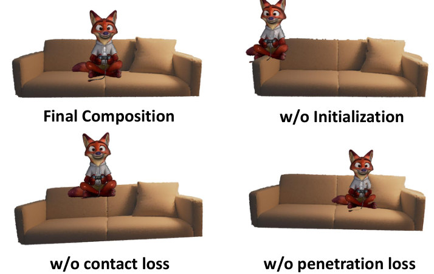
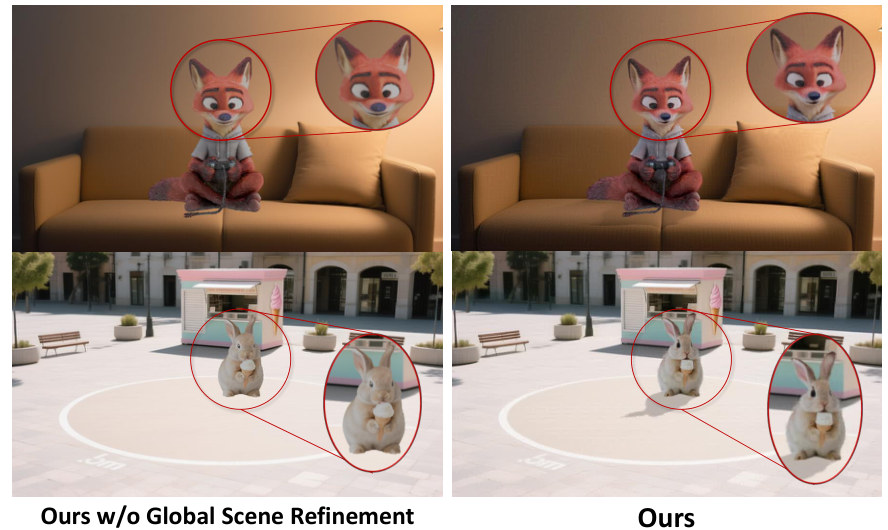

We introduce Edit4D, an editable text-to-4D scene generation framework that constructs 4D scenes from separate background and dynamic character representations. Recent advances in generative models have enabled text-driven dynamic scene synthesis, but editable 4D scene generation remains challenging due to the need to preserve spatial geometry and temporal dynamics. Existing approaches typically generate holistic scene videos, where the background and dynamic characters are coupled, making object-level editing and flexible camera control difficult. Edit4D addresses these limitations through a stage-specific generation pipeline. Given a user instruction, Edit4D first decomposes it into stage-specific prompts for background, dynamic character, and scene–character composition. Using these prompts, we synthesize multi-view scene images with text-to-image and camera-conditioned generative priors and reconstruct a background 3D Gaussian splatting representation. We then generate a character image, animate it with an image-conditioned video prior, reconstruct a 4D mesh, and bind Gaussian primitives to obtain a character representation. Finally, both components are composed through text-guided segmentation and contact-aware optimization. A global scene refinement is then performed to improve harmonization and rendering consistency. By integrating stage-specific components, Edit4D enables controllable camera motion, flexible object-level editing, and the practical construction of editable 4D scenes.

Generation pipeline. A user instruction is decomposed into stage-specific prompts by an LLM. The background scene and the dynamic character are generated in parallel, composed via text-guided segmentation and contact-aware optimization, and finally refined jointly.
Comparison with 4Real, Dream-in-4D, 4Dfy, and Free4D. Select a prompt below.
For a fair comparison, Free4D is rerun using reference videos generated by the open-source video generation model WAN, and the resulting 4D scenes are compared with ours.
Because the background and the character are stored as separate Gaussian assets, either one can be replaced while the other stays untouched — no full regeneration required.
Free4D represents the scene holistically, so any edit requires regenerating the entire 4D scene and the background drifts. Edit4D reuses the untouched components, so only the edited part changes.

Top: Free4D, bottom: Edit4D. Full regeneration changes the bookshelf and rug, while Edit4D preserves the original scene during composition and appearance editing.
| Recomposition | Appearance Edit | |||
|---|---|---|---|---|
| Metric | Free4D | Ours | Free4D | Ours |
| Success (GLM-4.6) ↑ | 0% | 100% | 0% | 100% |
| Success (Qwen3-VL) ↑ | 40% | 100% | 40% | 100% |
| Success (Mistral-3.1) ↑ | 40% | 100% | 0% | 100% |
| CLIP preservation ↑ | 0.964 | 0.997 | 0.957 | 0.991 |
| DINO preservation ↑ | 0.901 | 0.997 | 0.871 | 0.988 |
| Time (min) ↓ | 180 | 45 | 180 | 45 |
| User study ↑ | 16.4% | 83.6% | 10.0% | 90.0% |
Editability evaluation. Success is judged by three VLMs on background preservation; preservation is measured by CLIP / DINO similarity with character regions masked.
A continuous, large camera rotation around the dynamic character shows both scene-level and object-level consistency across substantially different viewpoints.

Renderings from the canonical view and four large camera offsets over time. Methods that distill video priors into one holistic scene degrade quickly off-axis; Edit4D builds the scene from explicit 3D components and stays consistent.

| Setting / Method | Text Align | Consistency | Aesthetic |
|---|---|---|---|
| (a) 4Real | 26.7% | 98.1% | 52.6% |
| Free4D | 24.7% | 97.6% | 62.3% |
| Ours | 27.1% | 99.4% | 68.3% |
| (b) 4Dfy | 27.6% | 98.1% | 56.2% |
| Free4D | 25.2% | 98.1% | 61.2% |
| Ours | 28.0% | 99.2% | 66.2% |
| (c) Dream-in-4D | 26.6% | 97.6% | 56.2% |
| Free4D | 25.5% | 97.1% | 63.2% |
| Ours | 29.2% | 99.3% | 74.8% |
VBench metrics under the three evaluation settings of Free4D.
| Method | 3D Structure | Visual Quality |
|---|---|---|
| Free4D | 39.5% | 35.0% |
| Ours | 60.5% | 65.0% |
Pairwise user study (25 participants) against Free4D using the same video generation model.

Qualitative samples from settings (a), (b), and (c) in the table above.

Composition. Without initialization the character lands in the wrong place; without contact loss it floats; without penetration loss it sinks into the sofa.

Global scene refinement sharpens fine details and harmonizes the character with the scene lighting.
| Init. | Lcontact | Lpenetration | Global Refine | Text Align | Consistency | Aesthetic |
|---|---|---|---|---|---|---|
| ✓ | ✓ | 26.8% | 98.7% | 68.0% | ||
| ✓ | ✓ | 25.0% | 98.9% | 67.2% | ||
| ✓ | ✓ | 26.6% | 98.9% | 67.7% | ||
| ✓ | ✓ | ✓ | 26.5% | 98.9% | 68.2% | |
| ✓ | ✓ | ✓ | ✓ | 28.1% | 99.4% | 69.0% |
@article{kim2026edit4d,
title = {Edit4D: Editable 4D Scene Generation with Textual Control},
author = {Kim, Chanwoo and You, Tackgeun and Lim, Hwasup},
journal = {arXiv preprint arXiv:2610.21668},
year = {2026}
}